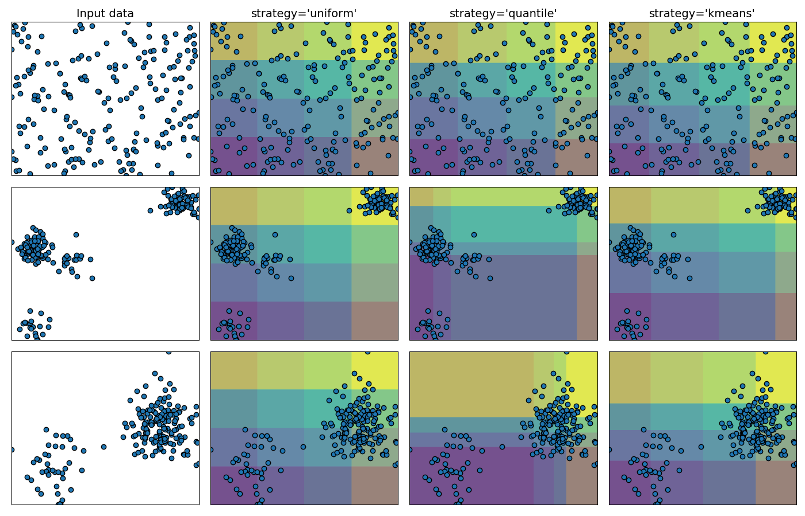

Note
Click here to download the full example code or run this example in your browser via Binder
Demonstrating the different strategies of KBinsDiscretizer¶
This example presents the different strategies implemented in KBinsDiscretizer:
‘uniform’: The discretization is uniform in each feature, which means that the bin widths are constant in each dimension.
quantile’: The discretization is done on the quantiled values, which means that each bin has approximately the same number of samples.
‘kmeans’: The discretization is based on the centroids of a KMeans clustering procedure.
The plot shows the regions where the discretized encoding is constant.
Out:
# Author: Tom Dupré la Tour
# License: BSD 3 clause
import numpy as np
import matplotlib.pyplot as plt
from sklearn.preprocessing import KBinsDiscretizer
from sklearn.datasets import make_blobs
print(__doc__)
strategies = ['uniform', 'quantile', 'kmeans']
n_samples = 200
centers_0 = np.array([[0, 0], [0, 5], [2, 4], [8, 8]])
centers_1 = np.array([[0, 0], [3, 1]])
# construct the datasets
random_state = 42
X_list = [
np.random.RandomState(random_state).uniform(-3, 3, size=(n_samples, 2)),
make_blobs(n_samples=[n_samples // 10, n_samples * 4 // 10,
n_samples // 10, n_samples * 4 // 10],
cluster_std=0.5, centers=centers_0,
random_state=random_state)[0],
make_blobs(n_samples=[n_samples // 5, n_samples * 4 // 5],
cluster_std=0.5, centers=centers_1,
random_state=random_state)[0],
]
figure = plt.figure(figsize=(14, 9))
i = 1
for ds_cnt, X in enumerate(X_list):
ax = plt.subplot(len(X_list), len(strategies) + 1, i)
ax.scatter(X[:, 0], X[:, 1], edgecolors='k')
if ds_cnt == 0:
ax.set_title("Input data", size=14)
xx, yy = np.meshgrid(
np.linspace(X[:, 0].min(), X[:, 0].max(), 300),
np.linspace(X[:, 1].min(), X[:, 1].max(), 300))
grid = np.c_[xx.ravel(), yy.ravel()]
ax.set_xlim(xx.min(), xx.max())
ax.set_ylim(yy.min(), yy.max())
ax.set_xticks(())
ax.set_yticks(())
i += 1
# transform the dataset with KBinsDiscretizer
for strategy in strategies:
enc = KBinsDiscretizer(n_bins=4, encode='ordinal', strategy=strategy)
enc.fit(X)
grid_encoded = enc.transform(grid)
ax = plt.subplot(len(X_list), len(strategies) + 1, i)
# horizontal stripes
horizontal = grid_encoded[:, 0].reshape(xx.shape)
ax.contourf(xx, yy, horizontal, alpha=.5)
# vertical stripes
vertical = grid_encoded[:, 1].reshape(xx.shape)
ax.contourf(xx, yy, vertical, alpha=.5)
ax.scatter(X[:, 0], X[:, 1], edgecolors='k')
ax.set_xlim(xx.min(), xx.max())
ax.set_ylim(yy.min(), yy.max())
ax.set_xticks(())
ax.set_yticks(())
if ds_cnt == 0:
ax.set_title("strategy='%s'" % (strategy, ), size=14)
i += 1
plt.tight_layout()
plt.show()
Total running time of the script: ( 0 minutes 0.815 seconds)